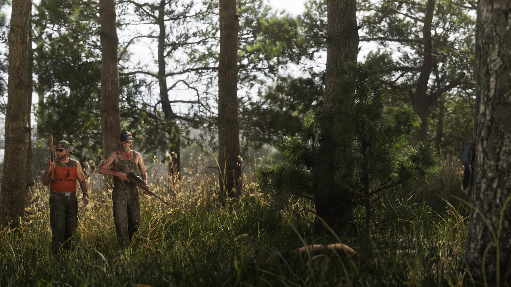

Как зарабатывать деньги в GTA 6
Обновлено: 24.09.2026

Коротко
- Деньги бывают на счёте, наличными и в сумках с добычей.
- Грабить можно магазины, ювелирные, банки и инкассаторов.
- Охота даёт доход через контакты Джейсона.
- Подробные гайды — после релиза.
Содержание
Виды денег
- Деньги на банковском счёте
- Наличные
- Добыча в сумках — сколько увезёте, зависит от транспорта
Ограбления
Ограбить можно любой магазин — по-тихому, со взломом или со взрывчаткой; магазины различаются входами, охраной, сейфами и сотрудниками. Также показаны ювелирные, банки и инкассаторские машины. Грабитель банков Рауль Баутиста — один из персонажей игры.

Другие способы
Охота связана с контактами Джейсона и приносит доход. Полные гайды по заработку появятся после релиза.

Источники: Rockstar Games — официальный сайт GTA VI (rockstargames.com/VI), Rockstar Newswire; превью журналистов и официальный геймплейный ролик Rockstar (по данным GTABase, VICE).